CSE 559A Project3: Eigenfaces
Mengyan Li
1. Testing recognition with cropped class images
Average face:
Eigenfaces: 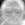 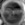 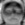 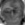 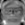 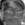
Experiment plot:
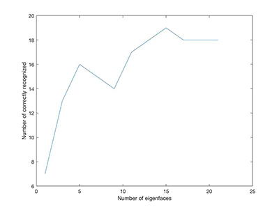
Questions:
1. The general trend tends to be that the more Eigenfaces that are
used, the more correctly recognized. However, using more Eigenfaces
implies more expensive costs(time, space) and in some range of number
of eigenfaces, the correct rate fluctuates in an interval. Therefore,
there might not be a clear answer of how many eigenfaces we should use,
it depends on whether the cost or the accuracy is required.
2. Recognition errors(given 10 eigenfaces, but actually these two never works):
Interesting pictures:
Best matches: 
Real neutral pictures:
The correct answer ranks 3 for the first, and 6 for the second. I think wearing glasses may be an factor that makes the detection failed, the rotation might also be a reason.
2. Cropping and finding faces
I used 10 eigenfaces for this part.
The result for the cropped test image:
The result for cropping my image:
The result for test group images:
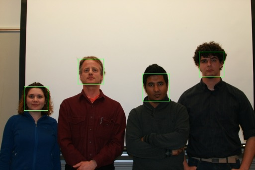
min scale:0.45, max scale:0.6, step:0.05
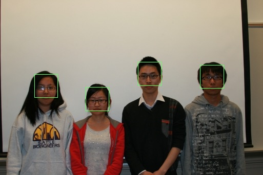
min scale:0.3, max scale:0.6, step:0.05
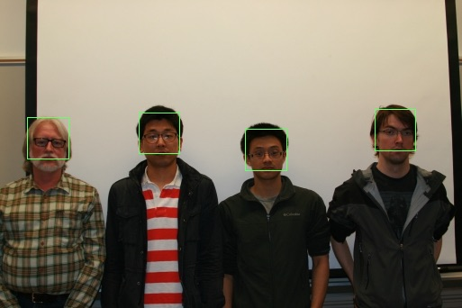
min scale:0.45, max scale:0.5, step:0.05
Result of the group picture I downloaded:
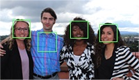
min scale:0.8, max scale:1.0, step:0.005
This picture might be too small, and people wearing light color might be difficult to detect.
3. Verify Face
I used 10 eigenfaces for this part.
I tried MSE threshold for 10000, 20000, 30000, 40000, 50000, 60000,
70000, 80000, 90000, 100000, and find 20000 is the best value.
For MSE threshold = 20000, I have false positive number 4, and
false negative number 13, the false positive rate is 0.69%, ad false
negative rate is 2.26%